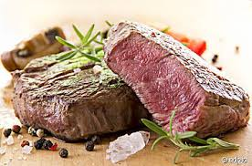

Zartes Rindersteak

Zutaten
für eine Personen| 250 g | Entrecôte oder Rinderfilet |
| 25 g | Palmfett oder Öl |
| nach Belieben | Salz und Pfeffer |
Zubereitung
- Das Fleisch 2 Stunden vor dem Braten aus dem Kühlschrank nehmen, damit es Raumtemperatur annimmt und sich die Hitze besser verteilen kann.
- Den Backofen auf 80°C vorheizen.
- Eine Eisen- oder Edelstahlpfanne mit dem Fett so heiß wie möglich erhitzen. Das Steak hineingeben und von jeder Seite 1-2 Minuten (je nach Dicke) scharf anbraten. Danach das Steak auf den Rost des vorgeheizten Backofens legen. Dort bleibt es für ca. 30 Minuten.
- Anschließend das Steak für 5-10 Minuten auf ein Holzbrett legen und zum Schluss noch einmal kurz von beiden Seiten in der Pfanne erhitzen. Mit Salz und Pfeffer würzen.
- Dazu passt ein grüner Salat und Pommes.
Das Rezept wurde in deinem Kochbuch gespeichert.
hinzugefügt von: kürbis001
Aufwand: mittel
-
- Fleisch
- + Begriff hinzufügen
Kommentare